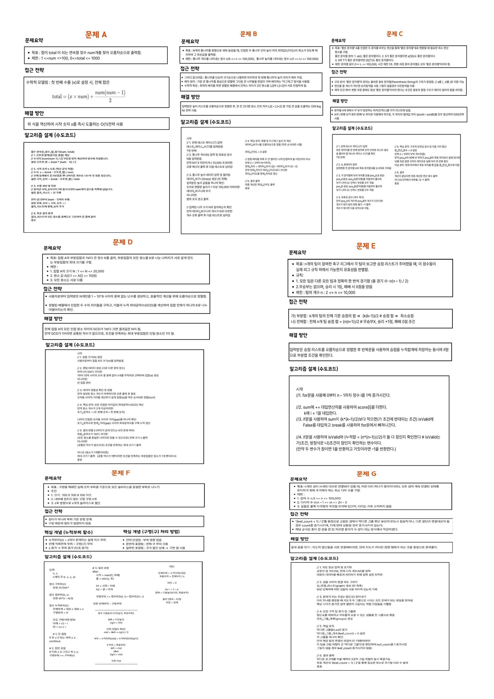

해커톤 대회 대상
2026학년도 제1학기 해커톤에서 10조로 참가해 대상을 받았습니다. 알고리즘 문제 7개(A~G)를 풀고 문제마다 요약, 접근 전략, 해결 방안, 수도코드를 한 장의 포스터로 정리했습니다.
문제 A 직접 풀어 보기
합이 total이 되는 연속된 정수 num개를 찾아 오름차순으로 출력합니다. 첫 수를 x라 하면 total = x × num + num(num − 1) / 2 이므로, 식을 거꾸로 풀어 x를 한 번에(O(1)) 구합니다.
푼 문제 7개
A연속된 정수의 합
합이 total인 연속 정수 num개를 찾습니다. 첫 수 x에 대한 식을 세워 역산하는 O(1) 방법으로 풀었습니다.
B원형 통나무 배치
통나무 N개를 원형으로 세울 때 이웃한 두 높이 차의 최댓값을 가장 작게 만듭니다. 정렬 뒤 가장 큰 통나무를 가운데 두고 양옆으로 번갈아 놓는 지그재그 배치를 쓰면, 한 칸 건너뛴 원소의 차 L[i] − L[i−2] 중 최댓값이 답이 됩니다(O(N log N)).
C좋은 문자열 바꾸기
‘좋은 문자열’ A를 이웃한 두 문자 교환만으로 B로 바꾸는 최소 횟수를 구합니다. 괄호 문자열과 같은 구조임을 이용해 두 문자열의 ‘a’ 위치 차이를 모두 더하는 O(N) 방법으로 풀었습니다.
D나머지가 같은 부분집합
원소를 K로 나눈 나머지가 모두 같은 가장 큰 부분집합을 구합니다. 정렬한 뒤 이웃한 원소 차이들의 최대공약수가 1보다 크면 전체 N개, 1이면 1개가 답입니다.
E축구 리그 승점 검증
n개 팀의 승점 목록이 실제 리그에서 나올 수 있는지 판별합니다. 오름차순 정렬 뒤 앞에서 k개 팀 승점 합이 k(k−1)/2 이상인지, 전체 합이 n(n−1)/2인지 확인합니다.
F구멍 난 치즈 자르기
구 모양 구멍이 있는 100×100×100 치즈를 실제 부피가 같은 s조각으로 자릅니다. 높이 z까지의 누적 부피 함수(구 일부가 잘린 경우는 구면 캡 공식)를 만들고 이분 탐색으로 자를 위치를 찾았습니다.
G끊기지 않는 다리 추가
다리 하나가 끊겨도 모든 섬이 이어지도록 추가할 최소 다리 수를 구합니다. 끊기면 섬이 나뉘는 다리를 찾아 그룹으로 묶고, 막다른 그룹 수를 셌을 때 (leaf_count + 1) / 2가 답입니다.
제출한 포스터

PDF로 크게 보기 →